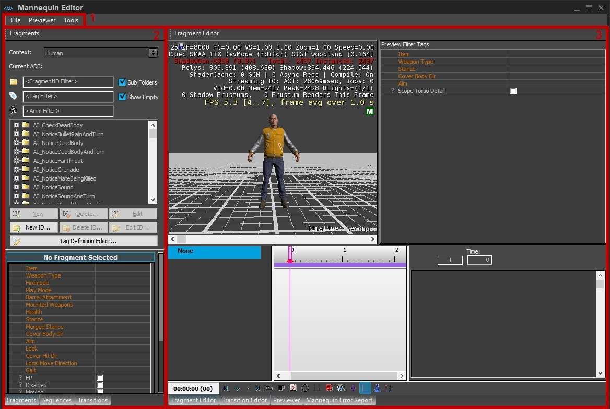

Обзор
Редактор Mannequin — это набор инструментов высокого уровня, которые помогут вам справиться со сложностями интерактивной анимации.

Подробное описание редактора Mannequin см. эта страница.
1. Строка меню
Файл
| Вариант | Описание |
|---|---|
| Загрузить настройки предварительного просмотра | Загрузите существующую настройку предварительного просмотра. |
| Редактор предварительного просмотра | Редактор предварительного просмотра можно использовать для привязки персонажей и баз данных анимации к Контексты области действия для целей визуализации в редакторе Mannequin. Можно определить несколько конфигураций контекста, а затем переключаться между ними с помощью раскрывающегося списка «Контекст», доступного на панелях «Фрагменты» и «Переходы». |
| Редактор анимации DB | Редактор базы данных анимации используется для редактирования правил, определяющих, в каком режиме ADB файл фрагменты заканчиваются. Его также можно использовать для создания новых файлов ADB. |
| Редактор определений тегов | Редактор определения тегов используется для создания и редактирования Файлы определения тегов. Более подробную информацию можно найти в (техническом) руководстве. Настройка объекта с нуля. |
| Сохранить изменения | Открывает окно со списком измененных файлов и предоставляет возможность сохранить или отменить изменения для каждого файла. |
| Реэкспортировать все | Зафиксируйте все изменения, чтобы они были видны в редакторе уровней. |
Предварительный просмотр
| Вариант | Описание |
|---|---|
| Новая последовательность | Создайте новую последовательность. |
| Последовательность загрузки | Загрузите существующую последовательность. |
| Сохранить последовательность | Сохраните текущую последовательность. |
Инструменты
| Вариант | Описание |
|---|---|
| Список использованных анимаций | Экспортирует список всех файлов анимации (CAF), используемых всеми существующими настройками предварительного просмотра, в формате CSV. |
| Список использованных анимаций (текущий предварительный просмотр) | Экспортирует список всех файлов анимации (CAF), используемых в текущей загруженной настройке предварительного просмотра, в формате CSV. |
2. Панель «Фрагменты/Последовательности/Переходы»
Эта панель имеет три вкладки внизу, с помощью которых вы можете переключаться между тремя панелями: панелью «Фрагменты», панелью «Последовательности» и панелью «Переходы».
Фрагменты
Панель «Фрагменты» состоит из двух частей: списка фрагментов и списка TagState.
На этой панели перечислены все фрагменты в база данных анимации (и его подбазы данных). Он используется для поиска и создания фрагменты, изменить фрагмент теги, а также создание и редактирование fragmentIDs.
Обычно он используется в сочетании с Редактор фрагментов (для редактирования фрагментов) или просмотрщик (для предварительного просмотра эпизодов).
Доступ к нему можно получить, щелкнув вкладку «Фрагменты» в левой части редактора.
Учебные пособия, в которых рассматриваются некоторые из этих функций, см. Mannequin Урок по редактору 1. Настройка предварительного просмотра, фрагменты и сохранение и Mannequin Урок 2 по редактору – Теги и предварительный просмотр.
Следующие разделы будут проходить по частям этой панели сверху вниз:
Список фрагментов
| Вариант | Описание | |
|---|---|---|
| Контекст | Используйте раскрывающийся список контекста, чтобы выбрать, какую конфигурацию контекста вы хотите использовать. Этот список основан на текущей настройке предварительного просмотра, которую можно редактировать в редакторе предварительного просмотра. Фрагменты, отображаемые в браузере ниже, принадлежат базе данных текущей активной конфигурации контекста. | |
| Текущий ADB | Показывает ADB, в котором находятся фрагменты выбранного в данный момент fragmentID.
| |
| FragmentID Фильтр | Показывать только фрагменты слова fragmentIDs, содержащие это слово. | |
| Фильтр тегов | Показывать только фрагменты с тегами, содержащими это слово. Слово «<default>» тоже учитывается, поэтому, если вы ищете «default», оно включает в себя все фрагменты без тегов. | |
| Анимированный фильтр | Показывать только фрагменты с анимацией, содержащие это слово. | |
| Подпапки | Если флажок установлен: В списке фрагментов будут созданы папки для всех тегов. Теги с более высоким приоритетом будут находиться выше в дереве, чем теги с более низким приоритетом. | |
| Показать пусто | Покажите также FragmentIDs, в котором нет фрагментов. (полезно, например, при создании первого фрагмента с определенным fragmentID) |
Фрагмент дерева
Показывает список фрагментов, отсортированный по fragmentID.
Некоторые особенности этого древовидного представления, на которые следует обратить внимание:
- fragmentIDs — это корневые папки.
- Фрагменты — это записи со значком фильма.
- Теги иногда также отображаются в виде папок, это зависит от параметра «Подпапки».
- Фрагменты без тегов отображаются как опции для «<Default>».
Текущий «редактируемый» фрагмент показан на смелый. Это фрагмент, чей состояние тега отображается ниже, и это тот же фрагмент, который является основным фрагментом, отображаемым в настоящее время в редакторе фрагментов Mannequin.
Обратите внимание, что это другой фрагмент, чем выбранный в данный момент! (см. скриншот выше).
- Щелкните левой кнопкой мыши фрагмент, чтобы выбрать его.
- Двойной щелчок фрагмент, чтобы «отредактировать» его: откройте его в редакторе фрагментов Mannequin и покажите его состояние тега ниже.
- Перетаскивание левой кнопкой мыши фрагмент в область действия в средстве предварительного просмотра для автоматического создания FragmentID и ключей тегов для выбора этого конкретного фрагмента.
- Перетаскивание правой кнопкой мыши фрагмент для его дублирования.
- Щелкните правой кнопкой мыши по фрагменту и выберите «Копировать выделенный текст» скопировать его состояние тега.
- Использование Ctrl+C/Ctrl+V на фрагменте, чтобы дублировать его.
- Используйте Ctrl+C/Ctrl+V в папке тегов, чтобы дублировать все фрагменты в этой папке. Например, вот что происходит, когда мы копируем все, что находится внутри, на себя:
- Использование Ctrl+C/Ctrl+Shift+V в папке тегов, чтобы дублировать все фрагменты в этой папке. при изменении определенных тегов. Появится следующее окно, в котором вы можете изменить теги:
Вот что происходит, когда мы копируем все, что находится в «стоянии», и меняем тег позиции со «стоя» на «на коленях»:
Функциональные кнопки
| Кнопка | Описание |
|---|---|
| Новый | Создайте новый фрагмент внутри выбранного в данный момент fragmentID. |
| Удалить | Удалить выбранный в данный момент фрагмент. |
| Редактировать | Отредактируйте текущий выбранный фрагмент: откройте его в редакторе фрагментов Mannequin и покажите его состояние тега ниже. |
| Новый ID | Создайте новый FragmentID. Сначала он спросит у вас имя, после чего откроет Mannequin FragmentID Редактор. |
| Удалить ID | Удалить текущий выбранный FragmentID. |
| Изменить ID | Откройте редактор Mannequin FragmentID для выбранного в данный момент FragmentID. |
| Редактор определений тегов | Откройте редактор определений тегов Mannequin. |
TagState
Это показывает состояние тега (как глобальные теги, так и фрагментные теги) редактируемого в данный момент фрагмента, который выделен жирным шрифтом в списке фрагментов.
Здесь вы можете редактировать состояние тега этого фрагмента. Пустой или непроверенный тег означает, что тег не установлен во фрагменте.
Браузер последовательностей
Браузер последовательностей используется для выбора последовательность вы хотели бы открыть в Mannequin Предварительный просмотр.
Он просто перечисляет файлы в папке последовательности по умолчанию, описанной в статье файлы последовательности.
Для доступа к панели нажмите на вкладку Последовательности внизу редактора манекенов.
Нажмите double или Открыть кнопку, чтобы открыть выбранную последовательность.
Браузер переходов
Браузер переходов используется для отображения всех переходы в определенном база данных анимации (и его суб-АБР).
Он используется в сочетании с Mannequin Редактор переходов.
Доступ к нему можно получить, нажав кнопку Переходы вкладка внизу редактора манекенов.
См. Mannequin Урок 3 по редактору — Переходы.
| Вариант | Описание |
|---|---|
| Контекст | Используйте раскрывающийся список контекста, чтобы выбрать, какую конфигурацию контекста вы хотите использовать. Этот список основан на текущей настройке предварительного просмотра, которую можно редактировать в редакторе предварительного просмотра. Переходы, отображаемые в браузере ниже, принадлежат базе данных текущей активной конфигурации контекста. |
| Переход из/в | Предоставляет возможность фильтровать приведенный ниже список переходов на основе идентификаторов фрагментов и состояния тегов. |
Функциональные кнопки
| Кнопка | Описание |
|---|---|
| Новый | Создайте новый переход. |
| Открыть | Открыть текущий выбранный переход в редакторе переходов и показывает его в окне предварительного просмотра перехода ниже. |
| Редактировать | Редактировать текущий выбранный переход: открывает его в редакторе переходов и отображает в окне предварительного просмотра перехода ниже. |
| Копировать | Скопируйте выбранный переход. |
| Удалить | Удаляет выбранный переход. |
3. Редактор фрагментов/редактор переходов/предварительный просмотр/отчет об ошибках Mannequin
На панели справа вы можете открыть четыре различных инструмента редактора Mannequin: редактор фрагментов, редактор переходов, средство предварительного просмотра и отчет об ошибках Mannequin.
Редактор фрагментов
Редактор фрагментов используется для редактирования фрагментов (несколько одновременно).
Его можно воспитать:
- нажав на Редактор фрагментов вкладка внизу редактора манекенов.
- double нажатие на фрагмент или выделение редактировать в браузере фрагментов Mannequin.
- выбор Редактировать фрагмент из контекстного меню клавиши fragmentID (в программе просмотра Mannequin или других редакторах)
Подробности о треках см. Mannequin Свойства трека.
Подробные сведения о редактировании клипов см. Mannequin Свойства анимационного клипа.
Подробнее см. Mannequin Урок по редактору 1. Настройка предварительного просмотра, фрагменты и сохранение.
Редактор переходов
Редактор переходов — это место, где вы редактируете определенные переходы манекена.
Обычно он используется вместе с Переходный браузер.
Доступ к нему осуществляется нажатием кнопки Переходы вкладка внизу редактора манекенов.
См. Mannequin Урок 3 по редактору — Переходы.
Предварительный просмотр
Программа предварительного просмотра используется для редактирования и просмотра. Файлы последовательностиили просто протестировать последовательность фрагментов, даже не сохраняя ее в файл.
Доступ к нему можно получить, щелкнув вкладку «Просмотр» в нижней части редактора манекенов.
См. Mannequin Урок 2 по редактору: Теги и предварительный просмотр.
Mannequin Отчет об ошибке
На этой панели отображается результат проверки открытого в данный момент установка.
Это одна из панелей справа от редактора манекенов. Чтобы получить к нему доступ, просто нажмите вкладку «Отчет об ошибках» внизу.
Каждый раз, когда вы открываете настройка предварительного просмотра проверка выполняется на этой настройке. Если будут обнаружены какие-либо ошибки, отчет об ошибках автоматически появится на переднем плане.
Список ошибок/предупреждений
В этой области отображается список ошибок/предупреждений, обнаруженных при проверке.
Дважды щелкните строку, чтобы выбрать ее. фрагмент в браузере/редакторе фрагментов.
Выберите одну или несколько строк для работы с этими фрагментами с помощью меню или меню, вызываемого правой кнопкой мыши.
Меню отчета об ошибках
| Кнопка | Описание |
|---|---|
| Выбрать все | Проверьте все перечисленные ошибки/предупреждения. |
| Очистить выбор | Снимите все флажки. |
| Проверить | Запустите проверку еще раз. |
| Удалить фрагменты | Удалите фрагменты, соответствующие проверено ошибки/предупреждения. |
Меню правой кнопки мыши
| Вариант | Описание |
|---|---|
| Скопировать предупреждения в буфер обмена | Копировать все строки в буфер обмена. |
| Отчет об ошибках по электронной почте | Создайте письмо со всеми строками. |
| Открыть в Excel | Откройте строки в Excel. |